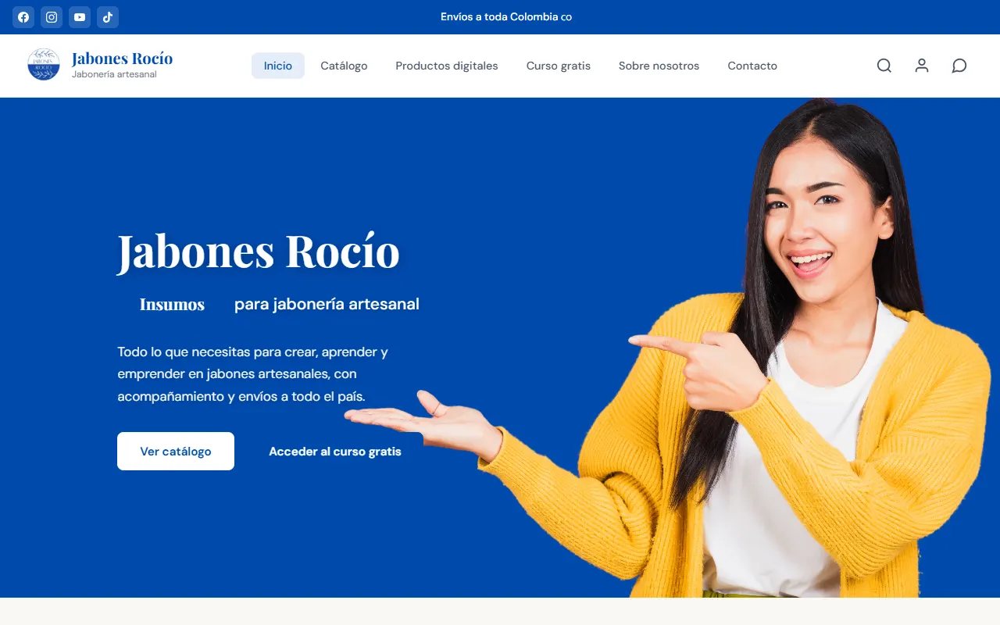

Jabones Rocío
Insumos para jabonería artesanal
El cliente arma su pedido en el carrito y el pedido llega completo a WhatsApp. Ahí mismo queda en el panel del negocio con su estado: pendiente, aceptado o enviado. El inventario avisa cuando algo se está acabando, y después se le sumó la lectura con código de barras.